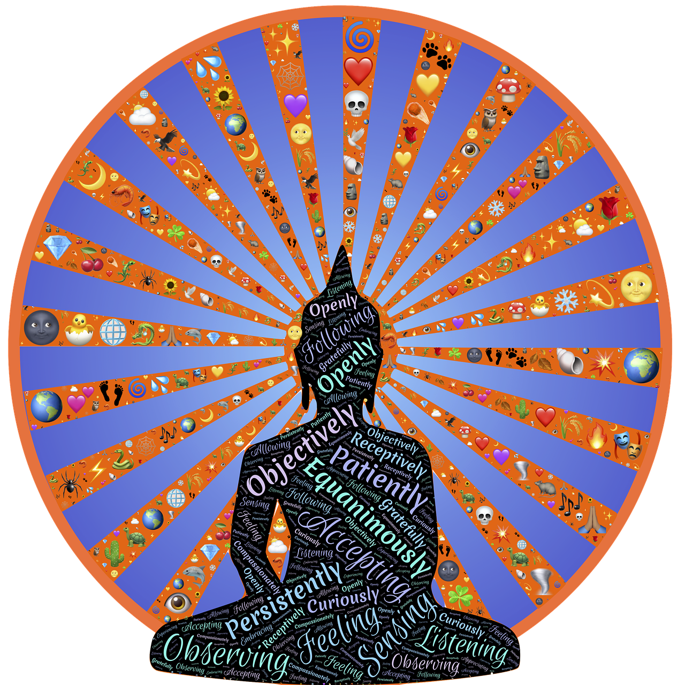

Mindfulness / Mindset:
Conscious presence is a method that can be used to manage stress, anxiety and pain, among other things. The method involves you focusing on the present with the help of your senses and your breathing. It is possible to train your capacity for conscious presence.
Mindfulness is a passive practice that allows us to pause and observe (our habitual thoughts).

The differences between Mindfulness and Mindset
Mindfulness is a passive practice that allows us to pause and observe (our habitual thoughts) with curiosity. Mindset is the active practice of identifying depleting thought patterns and replacing them with positive thoughts that are more supportive and compassionate of ourselves. Mindset is curating a library of renewing emotions and thoughts that reduce our stress and create emotional resilience.